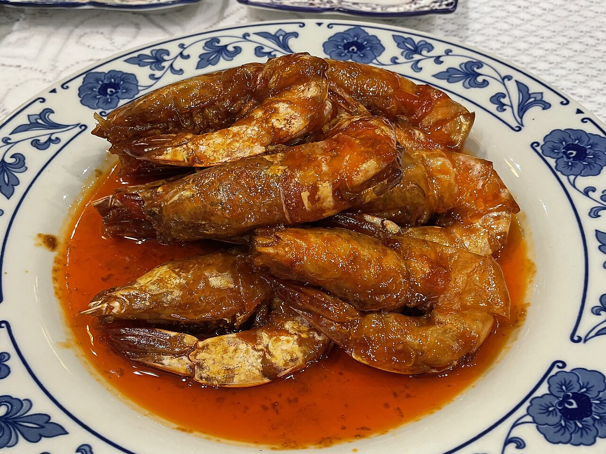

油焖大虾Shandong-Style Braised Prawns · 鲁菜
胶东沿海宴席名菜:大对虾(明虾)剪须开背,先以油煎出红亮的虾油, 再加糖、料酒与少量汤汁小火焖透。成菜虾红油亮、壳酥肉嫩, 咸甜适口,连虾脑虾油都是拌饭的精华。
去哪儿吃?
青岛·春和楼(中山路店)鲁菜 · 人均 ¥110
山东省青岛市市南区中山路146号
点评:青岛百年老店,油焖大虾取本地海虾,虾油足、汁甜鲜,海边人的宴客菜。
北京·丰泽园饭店(珠市口店)鲁菜 · 人均 ¥160
北京市西城区珠市口西大街83号
点评:招牌海味,大虾焖得红亮入味,虾壳酥到可以直接嚼。
怎么做?
- 大对虾/大明虾 10 只
- 姜、葱
- 白糖、料酒
- 盐、番茄酱(可选,增色)
- 高汤或水、油
- 虾剪去虾枪虾须,开背挑去沙线,洗净沥干。
- 锅中油热后下虾,中火煎至两面变红,轻压虾头逼出虾油。
- 下姜葱炒香,烹料酒,加糖、盐与少量水(或高汤),加盖小火焖 5 分钟。
- 开盖转大火收汁,不断将汤汁淋在虾上至浓稠红亮。
- 装盘后淋上锅中余汁,撒葱花即可。
小贴士:虾脑与虾油是鲜味来源,煎时务必轻压虾头把它逼出来; 水要少、火要小,让糖分与虾油浓缩成亮晶晶的琥珀色。